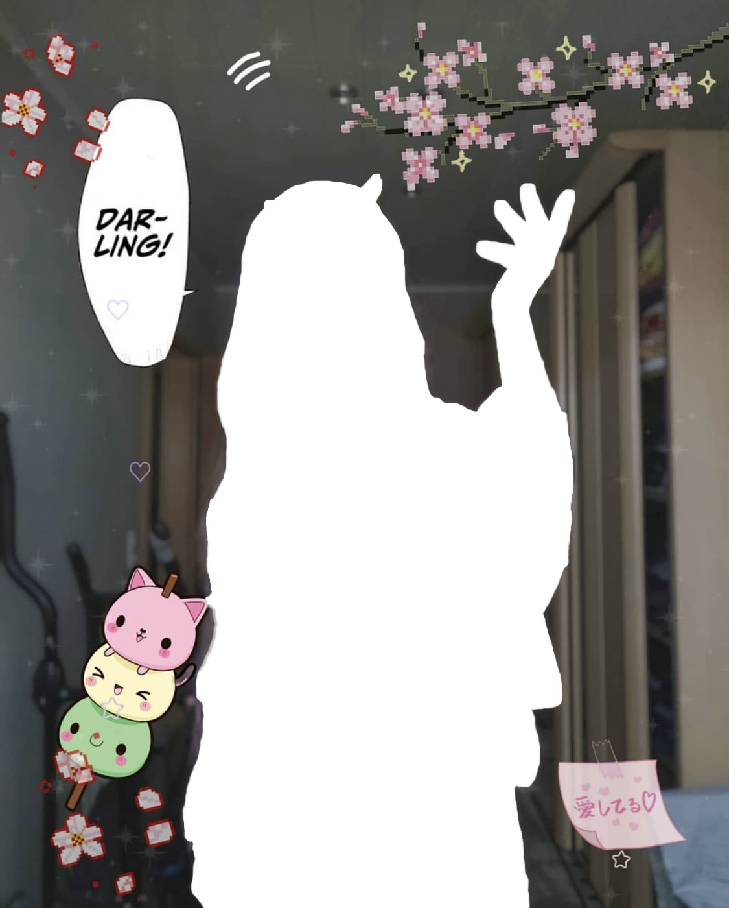
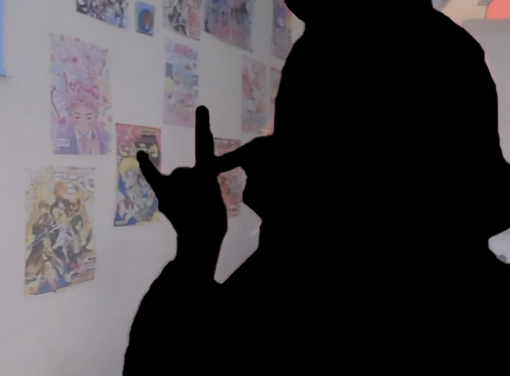
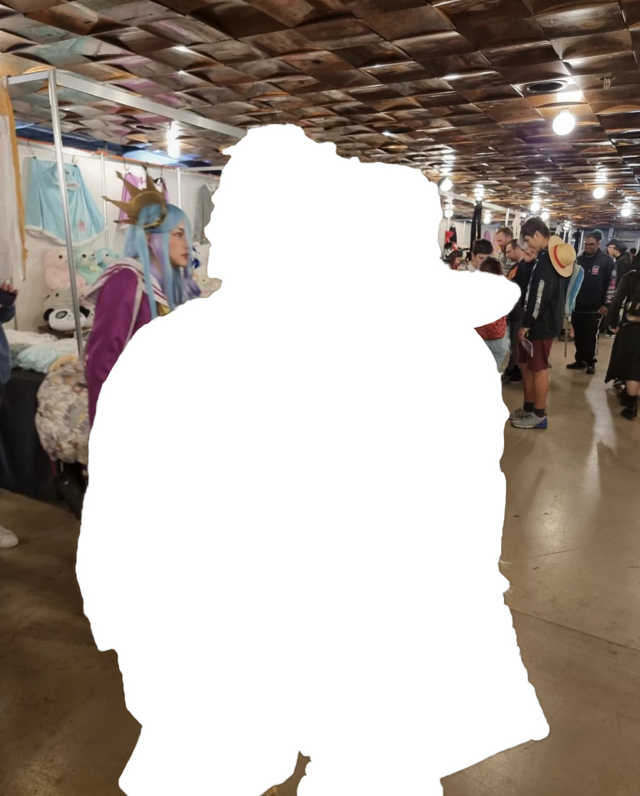
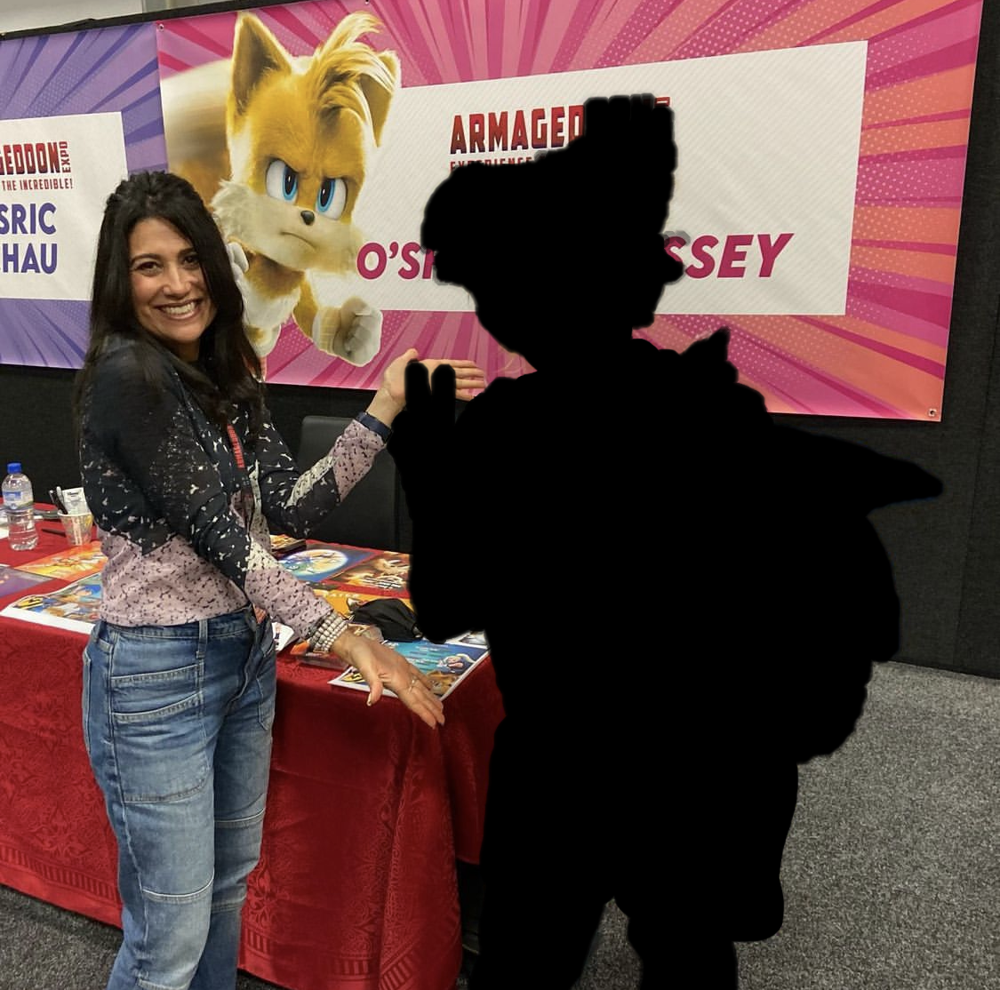
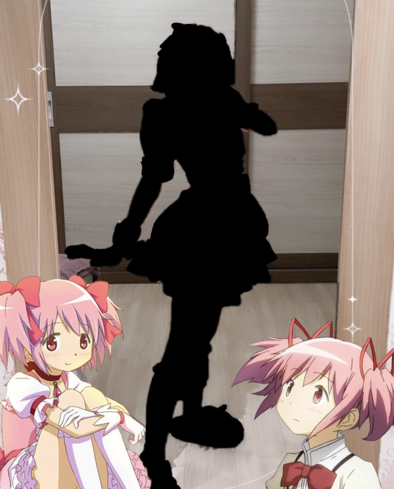

Guess you’ve never seen anything like this before! The coolest cosplay
award goes to me.

Cosplay is about having fun with the art of pretending to be someone
else and this weekend, we’re ready to fool around.

Be true to yourself, who you are and enjoy life. It is not what
happens in your life but how you react to it that matters…and also
cosplay!

Have you ever had the urge to dress up as your favourite character and
spend a day in their shoes?

Sometimes the best cosplayers are the ones who don’t realize they’re
cosplaying.